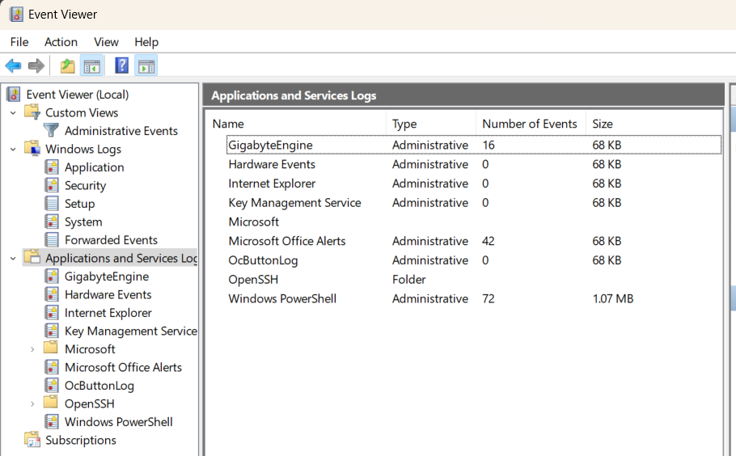
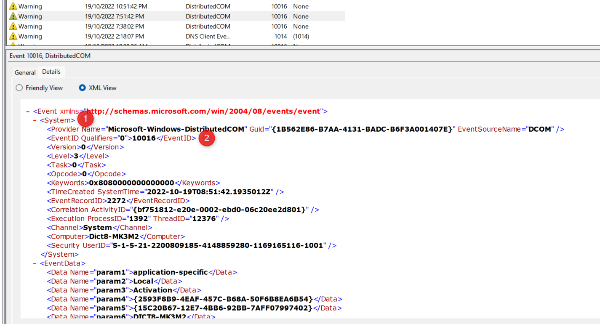
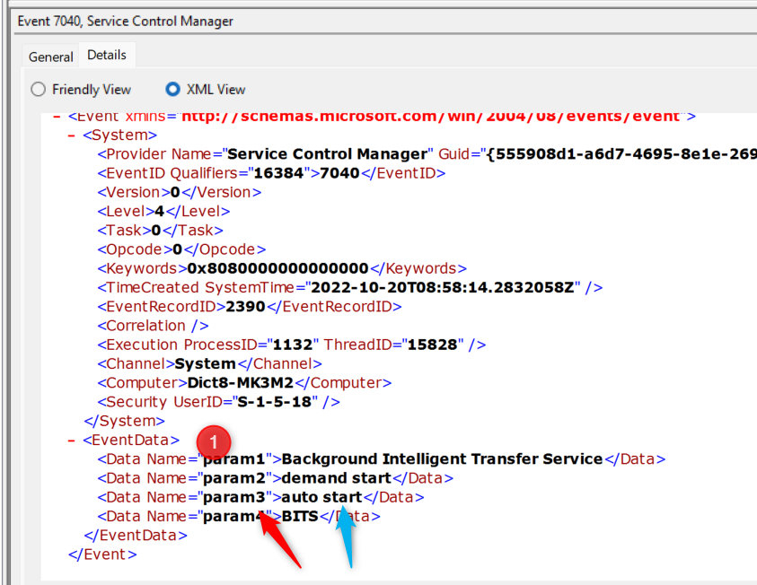

Event Viewer#
Event viewer is a built in program for reviewing events in the windows system. Events themselves arent stored in plain text, and are instead called from the OS via the Windows API (and then converted to XML which is then displayed). This was done to ensure the event viewer was a ‘source of truth’ that you knew included all event since the last cleared state. You would also know the log was cleared as it would be the first recorded event. Either way, events couldn’t be hidden/removed without making it quite obvious. Unfortunately, there have since been exploits that could clear individual events which really makes no-one happy except the bad guys…
The logs themselves are stored in Microsoft’s own format with extensions .evt or .evtx. They can be found in
C:\Windows\System32\winevt\Logs
Event viewer itself is just the name of the GUI program to view these files. If GUI isnt your thing however, there are alternatives
Event Viewer : The standard GUI program. evtvwr.msc
Wevtutil.exe : The cmd tool
Get-WinEvent : Powershell cmdlet
Event Types & Grouping#
This section covers the different groups in the Event Viewer GUI, as seen below. As this is taken straight from my Win11 box, it may look different to yours. Dont worry about it too much.

Types#
There are 5 levels of events. The below is pulled from Microsoft’s documentation. Not all of these are shown in all groups, and I’ve noticed a few ‘critical’ which arent mentioned. Something worth understanding
Error
An event that indicates a significant problem such as loss of data or loss of functionality. For example, if a service fails to load during startup, an Error event is logged.
Warning
An event that is not necessarily significant, but may indicate a possible future problem. For example, when disk space is low, a Warning event is logged. If an application can recover from an event without loss of functionality or data, it can generally classify the event as a Warning event.
Information
An event that describes the successful operation of an application, driver, or service. For example, when a network driver loads successfully, it may be appropriate to log an Information event. Note that it is generally inappropriate for a desktop application to log an event each time it starts.
Success Audit
An event that records an audited security access attempt that is successful. For example, a user’s successful attempt to log on to the system is logged as a Success Audit event
Failure Audit
An event that records an audited security access attempt that fails. For example, if a user tries to access a network drive and fails, the attempt is logged as a Failure Audit event.
Grouping - Windows Logs#
On the left of the GUI, we can see the groups. Again, the below is pulled directly from Microsoft for the “Windows Logs” group.
Application
Contains events logged by applications. For example, a database application might record a file error. The application developer decides which events to record.
Security
Contains events such as valid and invalid logon attempts, as well as events related to resource use such as creating, opening, or deleting files or other objects. An administrator can start auditing to record events in the security log.
System
Contains events logged by system components, such as the failure of a driver or other system component to load during startup.
Custom Log
Contains events logged by applications that create a custom log. Using a custom log enables an application to control the size of the log or attach ACLs for security purposes without affecting other applications.
Grouping - Application and Services Logs#
This grouping is specific to applications, depending on how they choose to logs. Some may log by manufacturer/owner (I.E. Microsoft) while others may be application specific (OpenSSH).
wevtutil.exe#
/r:[Remote Device to connect to] /u:[username] /p:[password]
qe (query events)
< /? (help)
COMMAND /? (command list)
Get WinEvent#
Get-WinEvent is the powershell equivilent of using the GUI ‘Event Viewer’. It replaces the Get-EventLog cmdlet. Generally it has the below format and it returns events in the order newest -> older.
Get-WinEvent -Logname Application
Filtering#
In general, you can pipe the output to another powershell cmdlet, but this isnt very efficent as it will still load everything before filtering
Get-WinEvent -LogName Application | Where-Object { $_.ProviderName -Match ‘WLMS’ }
A better option is to use a filter hash table, which filters each line BEFORE it is picked up
Get-WinEvent -FIlterHashTable @{ ProviderName=’WLMS’ } -Logname Application
You can also add multiple filters by separating with a ; (or entering each on a different line.
XPath#
Xpath, or XML Path, is a query language that is used to query the XML components of an result set. Fortunately for us, the Windows Event Log supports part of XPath 1.0 when using the Get-WinEvent cmdlet
If you take a look at an event in Event Viewer, swapping to the XML view will give the details that XPath can use.
This can then be provided to the FilterXPath arguement (instead of a filterHashTable from above). For example, to find the below options.

To build the query
Start with a ‘*/
Add the next level down, a System/
Add a sub level component, in this case EventID=10116
You can then add more components with an and or close with another ‘
This means our query ends up as
Get-WinEvent -LogName System -FilterXPath ‘*/System/EventID=10116’
EventData#
Event data works slighly differently, in which we must use a property of the DATA to filter. Again take the below example

To build the query
start with a ‘*/
Add the next level down, a EventData/
Add the Data name, Data[@Name=”param3”]
Add the value to search for. = “auto start”
Again, you can add more or finsh with a ‘
Our query is now
Get-WinEvent -Logname system -FilterXPath ‘*/Eventdata/Data[@name=”param3”]=”autostart”’